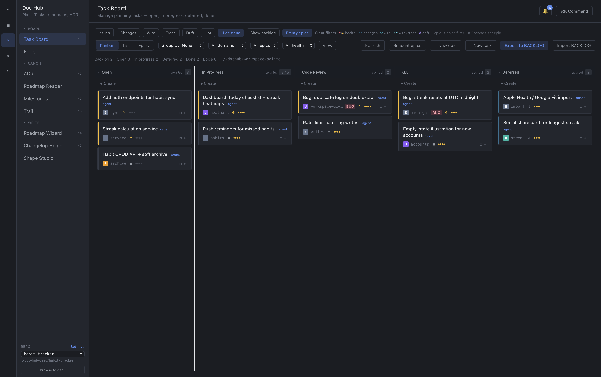

Press kit
Assets and copy for posts, blogs, and directories. Product site:
dochub-site.pages.dev
(custom domain doc-hub.app later).
One-liners
EN
Doc Hub — local-first launcher for docs & planning. Free baseline, no cloud required.
UA
Doc Hub — локальний лаунчер для доків і планування. Безкоштовний baseline, без хмари.
Short pitch
Point Doc Hub at any workspace. Browse docs, run a planning board, unlock trophies, and wire extensions — all on your machine. Closed core, open contracts. macOS, Windows, Linux.
Assets
App icon
OG image (1200×630)
Screenshot — Board
Screenshot — Dashboard
Screenshot — Audit
Screenshot — Milestones
Screenshot — Orbit
Screenshot — Glossary
Screenshot — MCP
Screenshot — Trophy
{kind=link}
{kind=link}
{kind=link}
{kind=link}
{kind=link}
{kind=link}
{kind=link}
{kind=link}
{kind=link}
{kind=link}

Ready posts
Attach a screens/portfolio-*.png shot or og.png.
X / Twitter
Shipped Doc Hub — a local-first launcher for docs & planning. No cloud required for the free baseline. Board, docs, trophies — on your machine. → https://dochub-site.pages.dev
I built Doc Hub: a desktop launcher for solo developers who want planning and docs without a SaaS account. • Local-first (offline baseline) • Task board + docs browser + Trophy Room • macOS / Windows / Linux Site: https://dochub-site.pages.dev
Reddit / HN-style
Show HN: Doc Hub – local-first docs & planning launcher (no cloud required) Desktop app for solo builders: point it at a workspace, get a board + docs index + light gamification. Free baseline forever; source is closed core, contracts are open. https://dochub-site.pages.dev
UA (Telegram / Twitter)
Зробив Doc Hub — локальний лаунчер для доків і планування. Без хмари для baseline. Борд, доки, Trophy Room — усе на твоїй машині. → https://dochub-site.pages.dev
Early pack license
Until 1 September 2026, email priymak615@gmail.com for an early license (Visual Ship Gate $15 or DTJ Trace Gate $25). After that date: paid checkout. → https://dochub-site.pages.dev/#packs
Facts
- Brand: Doc Hub (not Undefined Behavior)
- Bundle id: com.dochub.app
- Free forever on the launcher baseline
- Platforms: macOS, Windows, Linux
- Early pack license by email until 1 Sep 2026
- Do not link the private source repository